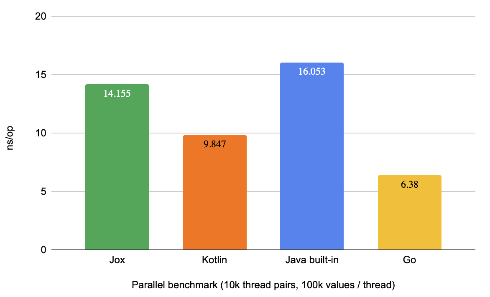

## ## Virtual-thread friendly ## Go-like channels for Java Adam Warski, April 2024 <a href="https://twitter.com/adamwarski">@adamwarski</a> / <a href="https://softwaremill.social/@adamwarski">@softwaremill.social</a> <a href="https://softwaremill.com"></a>
## Why a new concurrent data structure? * facilitate communication between virtual threads * performance comparable to the state-of-the-art * low memory footprint * feature set inspired by Go channels * based on Kotlin's implementation
```java [1|3-4|5] var ch = new Channel<Integer>(4); ch.send(1); ch.send(2); System.out.println(ch.receive()); ```
```java [1-2|4,6|9] var ch1 = new Channel<String>(); var ch2 = new Channel<String>(); Thread.ofVirtual().start(() -> { ch1.send("v1"); }); Thread.ofVirtual().start(() -> { ch2.send("v2"); }); System.out.println( select(ch1.receiveClause(), ch2.receiveClause()) ); ```
```java [4-6|7-10] var ch1 = new Channel<Integer>(); var ch2 = new Channel<Integer>(); Thread.ofVirtual().start(() -> { ch1.receive(); }); Thread.ofVirtual().start(() -> { ch2.receive(); }); var sent = select( ch1.sendClause(13, () -> "first"), ch2.sendClause(25, () -> "second") ); System.out.println("Sent: " + sent); ```
```java var ch = new Channel<String>(4); ch.send("hello"); ch.done(); System.out.println("Received: " + ch.receiveSafe()); System.out.println("Received: " + ch.receiveSafe()); ```
<a href="https://softwaremill.com"></a> 14ns/operation is 70 million ops / second
## jox ```java interface Channel<T> { T receive() throws InterruptedException; void send(T value) throws InterruptedException; void done(); void error(Throwable reason); } class Select { public static <U> U select(SelectClause<U>... clauses) throws InterruptedException } ```
On GitHub: <a href="https://github.com/softwaremill/jox">softwaremill/jox</a>, <br /> Apache 2 licensed, 0.1 available ```java System.out.println("Thank you!") ``` <!-- .element: style="text-align: center; font-size:40px;" --> <a href="https://softwaremill.com"></a> <a href="https://twitter.com/adamwarski">@adamwarski</a> / <a href="https://softwaremill.social/@adamwarski">@softwaremill.social</a>